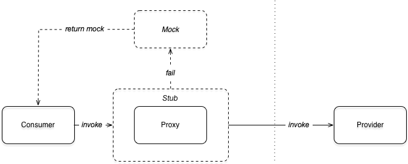

本地存根和本地伪装
基本概念
典型的 RPC 调用客户端是依赖并且只依赖接口编程来进行远程调用的。在真正发起远程调用之前，用户往往需要做一些预处理的工作，比如提前校验参数。在拿到返回调用结果之后，用户可能需要缓存结果，或者是在调用失败的时候构造容错数据，而不是简单的抛出异常。
这个时候，用户可以编写出类似以下的代码来处理上面提出的这些场景：
try {
preProcess();
return service.invoke(...);
} catch (Throwable e) {
return mockValue;
} finally {
postProcess();
}
类似的，用户也可以通过面向切面编程 AOP 的高级技巧来解决上面的诉求，比如通过 Spring AOP 的方式可以通过类似下面的这段配置来完成。使用 AOP 的技巧相比上面的代码来说，避免了容错处理等与业务无关的代码对业务代码的侵入，使得业务处理主逻辑更简洁。
<bean id="demo-service-stub" class="org.apache.dubbo.demo.DemoServiceStub"/>
<bean id="demo-service-mock" class="org.apache.dubbo.demo.DemoServiceMock"/>
<aop:config>
<aop:aspect id="stub" ref="demo-service-stub">
<aop:pointcut id="stubPointcut" expression="execution(* org.apache.dubbo.samples.DemoService+.*(..))"/>
<aop:before method="preProcess" pointcut-ref="stubPointcut"/>
<aop:after-returning method="postProcess" pointcut-ref="stubPointcut"/>
</aop:aspect>
<aop:aspect id="mock" ref="demo-service-mock">
<aop:pointcut id="mockPointcut" expression="execution(* org.apache.dubbo.samples.DemoService+.*(..))"/>
<aop:after-throwing method="mock" pointcut-ref="mockPointcut"/>
</aop:aspect>
</aop:config>
为了进一步的方便用户做 Dubbo 开发，框架提出了本地存根 Stub 和本地伪装 Mock 的概念。通过约定大于配置的理念，进一步的简化了配置，使用起来更加方便，并且不依赖额外的 AOP 框架就达到了 AOP 的效果。
本地存根的工作方式与 AOP 的 around advice 类似，而本地伪装的工作方式等同于 AOP 中的 after-throwing advice，也就是说，只有当远程调用发生 exception 的时候才会执行本地伪装。本地存根和本地伪装的工作流程如下图所示：

- 服务消费者发起调用
- 如果服务消费者端存在本地存根 Stub 的话，会先执行本地存根
- 本地存根 Stub 持有远程服务的 Proxy 对象，Stub 在执行的时候，会先执行自己的逻辑 (before)，然后通过 Proxy 发起远程调用，最后在返回过程之前也会执行自己的逻辑 (after-returning)
- 如果远程服务的 Proxy 对象在执行过程中抛出了 exception，会执行服务消费端的本地伪装 Mock 的逻辑 (after-throwing)，返回容错数据，从而达到服务降级的目的
开发一个本地存根 Stub
本地存根 Stub 由用户来提供，并在服务消费方部署。完整的示例可以在这里 [1] 获得。
public class DemoServiceStub implements DemoService { // #1
private static Logger logger = LoggerFactory.getLogger(DemoServiceStub.class);
private final DemoService demoService;
public DemoServiceStub(DemoService demoService) { // #2
this.demoService = demoService;
}
@Override
public String sayHello(String name) { // #3
logger.info("before execute remote service, parameter: " + name); // #4
try {
String result = demoService.sayHello(name); // #5
logger.info("after execute remote service, result: " + result); // #6
return result;
} catch (Exception e) {
logger.warn("fail to execute service", e); // #7
return null;
}
}
}
要和框架在一起工作，本地存根的实现需要遵循一些与框架事先做出的约定：
- 首先本地存根 Stub 是服务接口的一个实现
- 本地存根的实现需要提供一个拷贝构造方法，方便框架将远程调用的 Proxy 对象注入进来
- 同样的，本地存根需要提供服务接口中所有方法的实现。在本例中，需要实现 sayHello 方法
- 在真正发起远程调用之前，用户可以在本地执行一些操作。在本例中，在日志中记录传入的参数
- 通过框架传入的 Proxy 对象真正发起远程调用
- 在远程调用结束后，也可以加入本地代码的执行。在本例中，在日志中记录远程调用的返回结果
- 如果发生错误的时候，也可以做一些错误恢复的动作。在本例中，在日志中记录异常。当然，如果提供了本地伪装的话，catch 中的逻辑是可以省略掉的
其中步骤 4、步骤 6、和步骤 7 共同构建了等同于面向切面编程中的概念，分别对应于 before、after-returning、以及 after-throwing。
DemoServiceStub 运行在客户端，要使用本地存根的话，还需要在 stub-consumer.xml 中配置属性 stub。可以简单的通过指定 stub="true" 来告诉 Dubbo 框架使用本地存根，这个时候，本地存根的包名需要和服务接口的包名一致，类名必须在服务接口的类名后加上 Stub 的后缀。例如，当服务接口名是 org.apache.dubbo.samples.stub.api.DemoService 时，本地存根的全类名应该是 org.apache.dubbo.samples.stub.api.DemoServiceStub。
<dubbo:reference id="demoService" check="false" interface="org.apache.dubbo.samples.stub.api.DemoService" stub="true"/>
如果不希望使用默认的命名规则，也可以直接通过 stub 属性来指定本地存根的全类名。
<dubbo:reference id="demoService" check="false" interface="org.apache.dubbo.samples.stub.api.DemoService" stub="org.apache.dubbo.samples.stub.impl.DemoStub"/>
启动服务端 StubProvider 后，再运行客户端 StubConsumer，可以通过观察客户端的日志来验证本地存根的运行结果。
[09/04/19 11:52:21:021 CST] main INFO api.DemoServiceStub: before execute remote service, parameter: dubbo
[09/04/19 11:52:21:021 CST] main INFO api.DemoServiceStub: after execute remote service, result: greeting dubbo
[09/04/19 11:52:21:021 CST] main INFO stub.StubConsumer: result: greeting dubbo
开发一个本地伪装 Mock
上面说了本地伪装通常用于在远程调用出错的情况下服务降级。完整的示例可以在这里 [2] 获得。
这里通过在服务提供方的代码中睡眠来模拟调用端超时，从而执行本地伪装来做容错处理。
public class DemoServiceImpl implements DemoService {
public String sayHello(String name) {
try {
Thread.sleep(5000); // #1
} catch (InterruptedException e) {
e.printStackTrace();
}
return "hello " + name; // #2
}
}
- Dubbo 默认的超时时间是 1000 ms，这里通过睡眠 5000ms 来达到触发超时异常的发生
- 由于超时的发生，这个结果并不会被返回给客户端，取而代之的是 org.apache.dubbo.remoting.TimeoutException
在客户端提供本地伪装的实现。当远程调用发生错误的时候，返回给调用方的不是服务端的 "hello name"，取而代之的是 "mock name"。
public class DemoServiceMock implements DemoService {
private static Logger logger = LoggerFactory.getLogger(DemoServiceMock.class);
public String sayHello(String name) {
logger.warn("about to execute mock: " + DemoServiceMock.class.getSimpleName());
return "mock " + name;
}
}
同样的，要使用本地伪装的话，还需要在 mock-consumer.xml 中配置属性 mock。可以简单的通过指定 mock="true" 来告诉 Dubbo 框架使用本地伪装，这个时候，本地伪装的包名需要和服务接口的包名一致，类名必须在服务接口的类名后加上 Mock 的后缀。例如，当服务接口名是 org.apache.dubbo.samples.stub.api.DemoService 时，本地存根的全类名应该是 org.apache.dubbo.samples.stub.api.DemoServiceMock。
<dubbo:reference id="demoService" check="false" interface="org.apache.dubbo.samples.mock.api.DemoService"
mock="true"/>
如果不希望使用默认的命名规则，也可以直接通过 mock 属性来指定本地伪装的全类名。
<dubbo:reference id="demoService" check="false" interface="org.apache.dubbo.samples.mock.api.DemoService" mock="org.apache.dubbo.samples.mock.impl.DemoMock"/>
通过提供一个本地伪装的类，可以最大限度的控制出错之后的容错逻辑。有的时候，业务上并不需要这样灵活的机制，只有返回一个默认值的诉求，这个时候提供一个完整的本地伪装的实现就显得有点重了。或者线上出错的时候，应用并没有打包本地伪装，需要通过推送规则的方式临时对服务降级。Dubbo 框架为上面的这两种诉求都提供了快捷方式，帮助用户快速配置服务降级。
启动服务端 MockProvider 之后，然后再执行 MockConsumer 就可以看到下面的结果：
Caused by: org.apache.dubbo.remoting.TimeoutException: Waiting server-side response timeout by scan timer. start time: 2019-04-09 14:20:48.061, end time: 2019-04-09 14:20:49.077, client elapsed: 0 ms, server elapsed: 1015 ms, timeout: 1000 ms, request: Request [id=2, version=2.0.2, twoway=true, event=false, broken=false, data=RpcInvocation [methodName=sayHello, parameterTypes=[class java.lang.String], arguments=[world], attachments={path=org.apache.dubbo.samples.mock.api.DemoService, interface=org.apache.dubbo.samples.mock.api.DemoService, version=0.0.0}]], channel: /30.5.125.99:56433 -> /30.5.125.99:20880
at org.apache.dubbo.remoting.exchange.support.DefaultFuture.returnFromResponse(DefaultFuture.java:295)
at org.apache.dubbo.remoting.exchange.support.DefaultFuture.get(DefaultFuture.java:191)
at org.apache.dubbo.remoting.exchange.support.DefaultFuture.get(DefaultFuture.java:164)
at org.apache.dubbo.rpc.protocol.dubbo.DubboInvoker.doInvoke(DubboInvoker.java:108)
at org.apache.dubbo.rpc.protocol.AbstractInvoker.invoke(AbstractInvoker.java:157)
at org.apache.dubbo.monitor.support.MonitorFilter.invoke(MonitorFilter.java:88)
at org.apache.dubbo.rpc.protocol.ProtocolFilterWrapper$1.invoke(ProtocolFilterWrapper.java:73)
at org.apache.dubbo.rpc.protocol.dubbo.filter.FutureFilter.invoke(FutureFilter.java:49)
at org.apache.dubbo.rpc.protocol.ProtocolFilterWrapper$1.invoke(ProtocolFilterWrapper.java:73)
at org.apache.dubbo.rpc.filter.ConsumerContextFilter.invoke(ConsumerContextFilter.java:54)
at org.apache.dubbo.rpc.protocol.ProtocolFilterWrapper$1.invoke(ProtocolFilterWrapper.java:73)
at org.apache.dubbo.rpc.listener.ListenerInvokerWrapper.invoke(ListenerInvokerWrapper.java:78)
at org.apache.dubbo.rpc.protocol.InvokerWrapper.invoke(InvokerWrapper.java:56)
at org.apache.dubbo.rpc.cluster.support.FailoverClusterInvoker.doInvoke(FailoverClusterInvoker.java:80)
... 5 more
[09/04/19 02:20:49:049 CST] main WARN api.DemoServiceMock: about to execute mock: DemoServiceMock
[09/04/19 02:20:49:049 CST] main INFO mock.MockConsumer: result: mock world
下面通过规则推送为例展示这种快捷方式的用法，更多的用法请参考 Dubbo 官方用户手册 [3]。通过向配置中心推送指定服务的配置，就可以做到动态服务降级的目的。
--- # 1
configVersion: v2.7
scope: service
key: org.apache.dubbo.samples.mock.api.DemoService #2
enabled: true
configs:
- addresses: [0.0.0.0]
side: consumer #3
parameters:
mock: return configured-mock-value #4
...
- 以 Zookeeper 为例，规则的路径是 /dubbo/config/org.apache.dubbo.samples.mock.api.DemoService/configurators
- 该规则作用在 org.apache.dubbo.samples.mock.api.DemoService 服务上
- 该规则作用在客户端
- 当错误发送时，对服务的调用返回默认值 configured-mock-value
启动服务端 MockProvider 之后，再执行例子[2:1]中的 Configurator 完成对服务降级规则的配置，然后再执行 MockConsumer 就可以看到下面的结果：
[09/04/19 02:19:01:001 CST] main INFO integration.AbstractConfiguratorListener: [DUBBO] Notification of overriding rule, change type is: MODIFIED, raw config content is:
---
configVersion: v2.7
scope: service
key: org.apache.dubbo.samples.mock.api.DemoService
enabled: true
configs:
- addresses: [0.0.0.0]
side: consumer
parameters:
mock: return configured-mock-value
...
, dubbo version: 2.7.1, current host: 30.5.125.99
...
Caused by: org.apache.dubbo.remoting.TimeoutException: Waiting server-side response timeout. start time: 2019-04-09 14:19:03.737, end time: 2019-04-09 14:19:04.741, client elapsed: 1 ms, server elapsed: 1002 ms, timeout: 1000 ms, request: Request [id=2, version=2.0.2, twoway=true, event=false, broken=false, data=RpcInvocation [methodName=sayHello, parameterTypes=[class java.lang.String], arguments=[world], attachments={path=org.apache.dubbo.samples.mock.api.DemoService, interface=org.apache.dubbo.samples.mock.api.DemoService, version=0.0.0}]], channel: /30.5.125.99:56412 -> /30.5.125.99:20880
at org.apache.dubbo.remoting.exchange.support.DefaultFuture.get(DefaultFuture.java:188)
at org.apache.dubbo.remoting.exchange.support.DefaultFuture.get(DefaultFuture.java:164)
at org.apache.dubbo.rpc.protocol.dubbo.DubboInvoker.doInvoke(DubboInvoker.java:108)
at org.apache.dubbo.rpc.protocol.AbstractInvoker.invoke(AbstractInvoker.java:157)
at org.apache.dubbo.monitor.support.MonitorFilter.invoke(MonitorFilter.java:88)
at org.apache.dubbo.rpc.protocol.ProtocolFilterWrapper$1.invoke(ProtocolFilterWrapper.java:73)
at org.apache.dubbo.rpc.protocol.dubbo.filter.FutureFilter.invoke(FutureFilter.java:49)
at org.apache.dubbo.rpc.protocol.ProtocolFilterWrapper$1.invoke(ProtocolFilterWrapper.java:73)
at org.apache.dubbo.rpc.filter.ConsumerContextFilter.invoke(ConsumerContextFilter.java:54)
at org.apache.dubbo.rpc.protocol.ProtocolFilterWrapper$1.invoke(ProtocolFilterWrapper.java:73)
at org.apache.dubbo.rpc.listener.ListenerInvokerWrapper.invoke(ListenerInvokerWrapper.java:78)
at org.apache.dubbo.rpc.protocol.InvokerWrapper.invoke(InvokerWrapper.java:56)
at org.apache.dubbo.rpc.cluster.support.FailoverClusterInvoker.doInvoke(FailoverClusterInvoker.java:80)
... 5 more
[09/04/19 02:19:04:004 CST] main INFO mock.MockConsumer: result: configured-mock-value
总结
本文介绍了 Dubbo 中本地存根和本地伪装的概念和用法。从本质来讲，本地存根和本地伪装等同于面向切面编程中的概念，通过诸如 Spring 框架提供的 AOP 编程可以达到同样的目的。通过本文如何开发一个本地存根和本地伪装的示例，读者可以直观的感受到通过框架提供的机制更加方便快捷。同时，对于很多简单的场景和动态配置推送的场景，框架提供了仅通过配置而无需编码的方式来满足，进一步提升了框架使用者的效率。